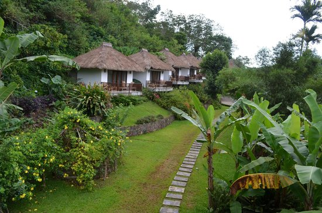

WISATA DANAU KELIMUTU FLORES
Nusa Tenggara Timur memiliki beragam potensi wisata alam yang belum diketahui banyak orang.
Salah satunya Danau Kelimutu.
Danau Kelimutu sendiri berada di puncak Gunung Kelimutu, Kabupaten Ende, Pulau Flores.
Danau ini terdiri dari tiga buah danau yang memiliki warna air yang berbeda-beda.
Selain keindahan danau, kamu juga bakal disuguhkan panorama alam pegunungan Kelimutu yang masih sangat asri.
Nah, buat kamu yang berencana main ke salah satu danau terindah di Indonesia ini,
berikut IDN Times rangkum info wisata Danau Kelimutu, mulai dari rute, harga tiket, hingga tips-tipsnya.

- Rute dan akses lokasi
Wisata Danau Kelimutu Flores: Rute, Harga Tiket, dan Tipsnyainstagram.com/friscayuwanita
Secara geografis, Danau Kelimutu berada di dalam kawasan Taman Nasional Kelimutu, Kabupaten Ende.
Untuk menuju Danau Kelimutu, kamu bisa memulai perjalanan dari pusat Kota Ende.
Dari Kota Ende, kamu bisa menuju ke desa di kaki Gunung Kelimutu, yaitu Desa Moni.
Jarak Desa Moni menuju gerbang Taman Nasional Kelimutu bisa ditempuh dengan berjalan kaki sekitar 30 menit.
Desa Moni juga bisa diakses lewat Labuan Bajo.
Dari Labuan Bajo, kamu bisa memilih bus atau mini bus jurusan Maumere, kemudian turun di Desa Moni.
- Harga tiket
Wisata Danau Kelimutu Flores: Rute, Harga Tiket, dan Tipsnyainstagram.com/ramenow
Taman Nasional Kelimutu sebenarnya merupakan destinasi wisata yang murah meriah.
Kamu cukup menyiapkan uang sekitar Rp20 ribu untuk tiket masuk.
Sementara untuk wisatawan asing, harga tiketnya sekitar Rp150 ribu. Asyiknya lagi,
pengelola sudah menerima alat pembayaran non-tunai, seperti kartu kredit dan debit.
- Fasilitas dan akomodasi
Sebenarnya belum ada akomodasi penginapan di sekitar Danau Kelimutu. Namun, kamu gak perlu khawatir,
kamu masih bisa menyewa penginapan di Desa Moni, yang merupakan gerbang awal masuk Taman Nasional Kelimutu.
Di Desa Moni, banyak yang menawarkan penginapan dengan tarif yang bervariasi.
Kamu masih bisa menemukan penginapan dengan tarif sekitar Rp150 ribuan per malam.
Selain itu, kamu juga bisa menyewa sepeda motor warga sekitar, jika ingin berkeliling menikmati pemandangan di Desa Moni.

- Tips saat ke Danau Kelimutu
Waktu yang tepat untuk mengunjungi Danau Kelimutu adalah sebelum matahari terbit atau sunrise.
Danau Kelimutu memang dikenal memiliki panorama sunrise terbaik di dunia.
Sebelum menuju Danau Kelimutu, disarankan untuk bermalam di Desa Moni.
Kamu bisa memulai perjalanan menuju Danau Kelimutu sekitar pukul 03.30 pagi.
Setelah turun dari Danau Kelimutu, jangan buru-buru pulang. Kamu bisa menikmati panorama alam di Desa Moni yang gak kalah memesona.
Desa ini memiliki pemandangan berupa perbukitan serta sawah dengan sistem terasering.
Selanjutnya, keindahan Air Terjun Moni yang boleh terlewatkan. Lokasinya hanya sekitar dua kilometer dari Danau Kelimutu.
Informasi di atas bisa jadi bekalmu untuk liburan ke Danau Kelimutu. Selamat liburan!